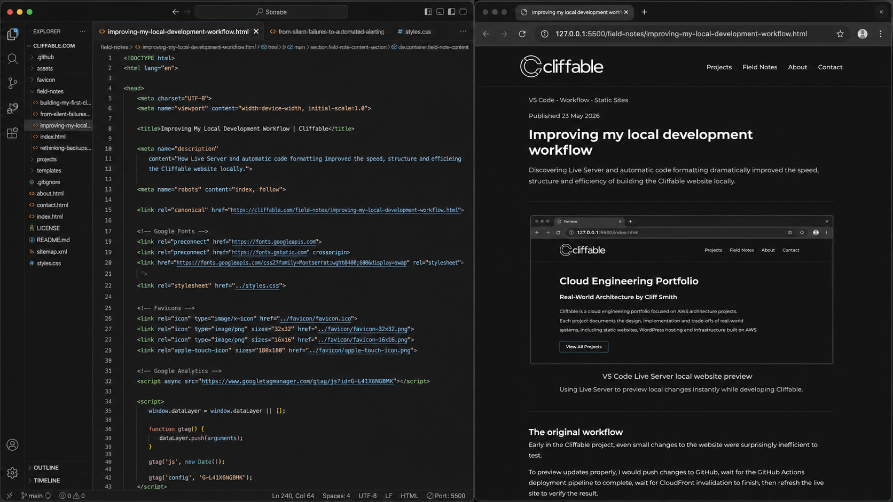

Published 23 May 2026
Improving my local development workflow
Discovering Live Server and automatic code formatting dramatically improved the speed, structure and efficiency of building the Cliffable website locally.
The original workflow
Early in the Cliffable project, even small changes to the website were surprisingly inefficient to test.
To preview updates properly, I would push changes to GitHub, wait for the GitHub Actions deployment pipeline to complete, wait for CloudFront invalidation to finish, then refresh the live site to verify the result.
While this worked technically, it created a slow feedback loop that made experimentation and iteration much harder than necessary.
- small visual changes took too long to verify
- layout debugging became repetitive
- testing spacing and alignment was slow
- simple HTML formatting mistakes became difficult to track visually
Discovering Live Server
Installing the Live Server extension for VS Code completely changed the pace of development.
Instead of repeatedly deploying changes to AWS just to test them visually, I could now preview updates instantly in the browser directly from the local project files.
{kind=link}

Live Server preview of the Cliffable website during local development.
The difference was immediate. Instead of waiting through deployment and CDN cache invalidation cycles, the browser refreshed automatically as soon as files were saved.
This made it much easier to experiment with layouts, spacing, typography and navigation structure while building the site.
Discovering automatic code formatting
Another major workflow improvement came from discovering the built-in formatting shortcut in VS Code using:
- Option + Command + F (macOS)
Before this, formatting large HTML sections manually was slow and frustrating. I often found myself scrolling through long pages trying to line up indentation by hand, especially when moving nested sections around.
Automatically formatting the code instantly restored clean structure and made the HTML much easier to read and maintain.

Automatic formatting restoring clean HTML structure in Visual Studio Code.
This reduced a surprising amount of mental overhead during development because I could focus on page structure and content rather than fighting indentation problems.
The combined effect
Individually these seem like small workflow improvements, but together they dramatically changed how efficiently I could work on the site.
The development process became faster, cleaner and much more iterative:
- changes could be tested immediately
- layout experimentation became easier
- HTML structure stayed consistent
- less time was wasted on repetitive manual tasks
More importantly, reducing friction in the workflow made it easier to stay focused on the actual engineering and design decisions rather than constantly managing the mechanics of deployment and formatting.
Conclusion
One of the recurring themes while building Cliffable has been discovering how small tooling improvements can compound into significant workflow gains over time.
Better feedback loops, cleaner formatting and faster iteration have made local development far more efficient, while also making the process of building the site much more enjoyable.
Related project
This workflow was developed while building the Static Website on AWS project.